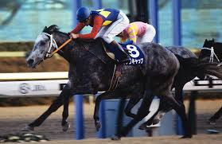
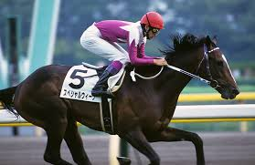

過去の歴史

有馬記念は初回は中山グランプリとゆう名前で開催されましたが、
創設した有馬氏がその年に亡くなったため、その栄誉を称え有馬記念と名がつけられた背景があります。
ジャパンカップは、1981年に「世界に通用する強い馬作り」を目指し、日本初の国際招待競走として日本中央競馬会（JRA）が創設しました。 東京競馬場・芝2400mで行われ、海外のトップホースを招待して日本の有力馬と競わせることで、日本競馬のレベルアップを図るのが目的で、 第1回はアメリカのメアジードーツが制覇しました。

活躍した名馬

オグリキャップとは、1980年代後半から90年代初頭に活躍し、競馬ブームを牽引した伝説的な競走馬で、「芦毛の怪物」の愛称で親しまれました。 地方競馬（笠松競馬）から中央競馬へ移籍して大成功を収め、特に現役最後のレースとなった有馬記念での奇跡的な復活優勝は、 競馬史に残る名場面として語り継がれています。

スペシャルウィークは1990年代後半に活躍した日本競馬を代表する名馬で、日本ダービー、天皇賞（春）、ジャパンカップを制して王道路線の頂点に立ちました。 特にジャパンカップでは世界の強豪を相手に勝利し、日本馬の実力を国際舞台で示した存在です。 こうした背景から、彼は「日本総大将」と呼ばれるようになりました。